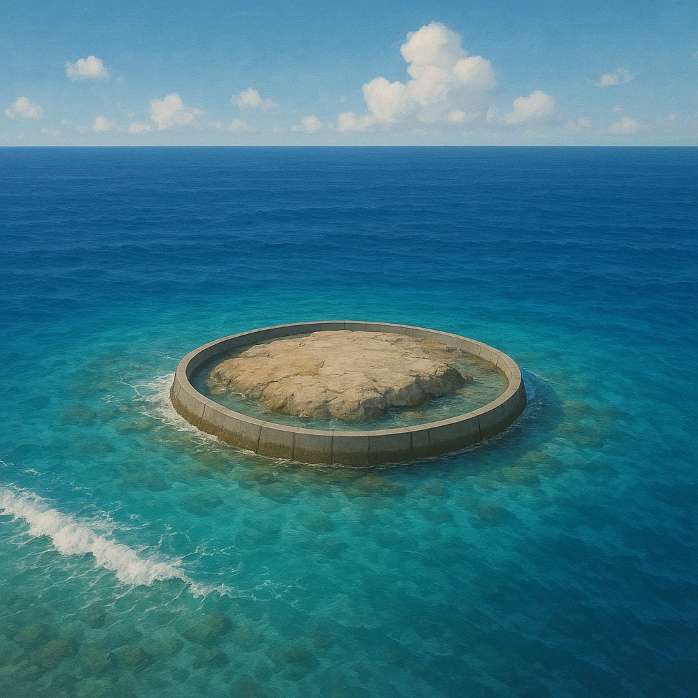

Ⅰ-4
端の島の緯度・経度
4島の
緯度・経度
はテストで問われる
方位
島の名前
緯度・経度
所属
北端
択捉島
北緯
45
度33分
北海道（北方領土）
東端
南鳥島
東経
153
度59分
東京都
南端
沖ノ鳥島
北緯
20
度25分
東京都
西端
与那国島
東経
122
度56分
沖縄県

緯度＝南北（北緯20〜45度）、経度＝東西（東経122〜153度）の間に日本はおさまる
第2章 日本の位置と地域
SEED EDUCATION